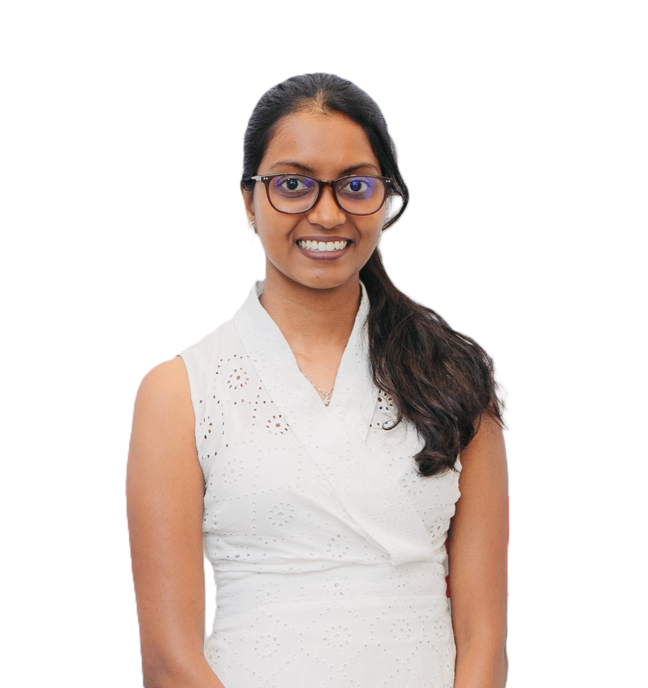

I am a Research Fellow in the Department of Information Engineering at the University of Pisa, working in Prof. Giuseppe Barillaro's Research Group . My current research focuses on implantable and biodegradable sensors for the detection of clinically and diagnostically relevant biomarkers, with the aim of advancing next-generation healthcare technologies.
I am an Erasmus Mundus alumna of the Joint Master's Degree in Chemical Nanoengineering and hold a BSc (Hons) in Chemistry from the University of Sri Jayewardenepura , Sri Lanka.
My research interests lie at the intersection of nanotechnology, biomaterials, biosensing, and healthcare, with a particular interest in developing innovative therapeutic and diagnostic technologies that can contribute to better patient care.
Beyond research, I enjoy exploring emerging technologies and developing my skills in coding, digital tools, and AI—embracing the opportunities created by this rapidly evolving technological era.